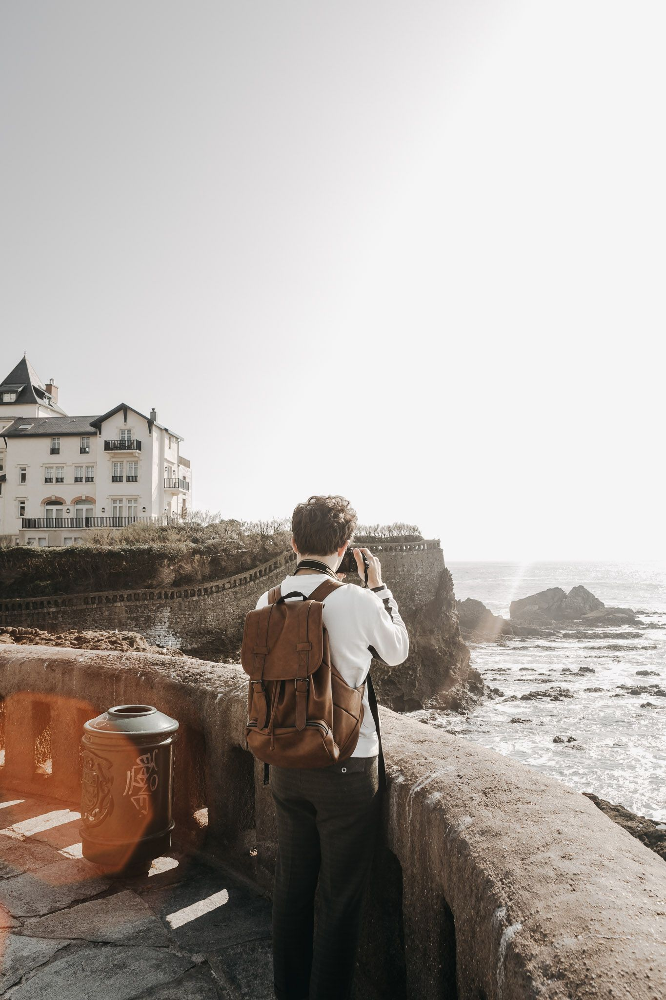

L'HISTOIRE D'UNE VIE
J'ai commencé il y a 6 ans la photo. Je partais sur de la découverte, puis je me suis perfectionné, j'ai appris avec une amie les réglages, les cadrages. Mais, il y avait quelque chose que j'aimais le plus. C'était le gout du décalé, de ce qui n'était pas ordinaire. J'ai commencé alors avec de la macrophotographie, puis enfin le portrait. Avec des plans cassés, des choses qui changent de ce qu'on peut voir habituellement.
Et maintenant, depuis Avril 2019, je me suis lancé en auto-entrepreneur. Me voilà, Nohoia "artiste". J'aime ce mot. Il représente un tout, et rien à la fois. Voici un bout de mon histoire.
